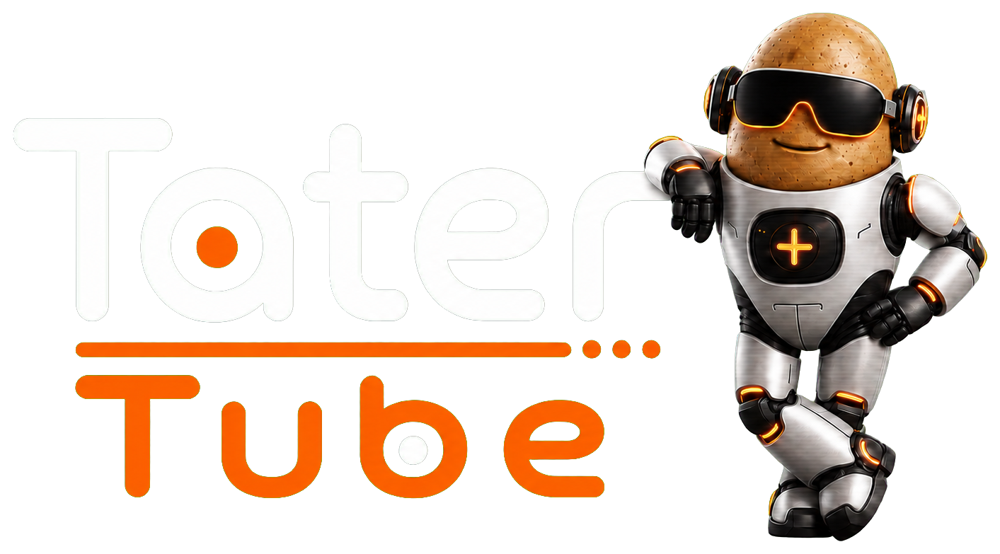
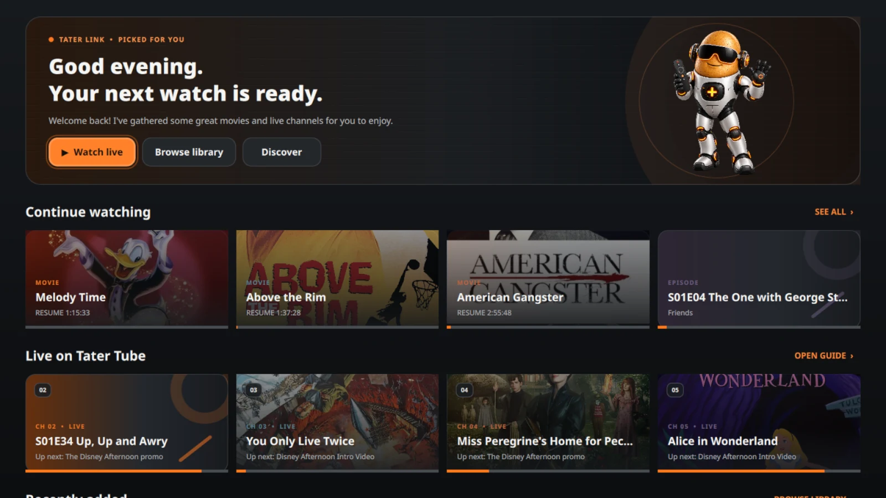
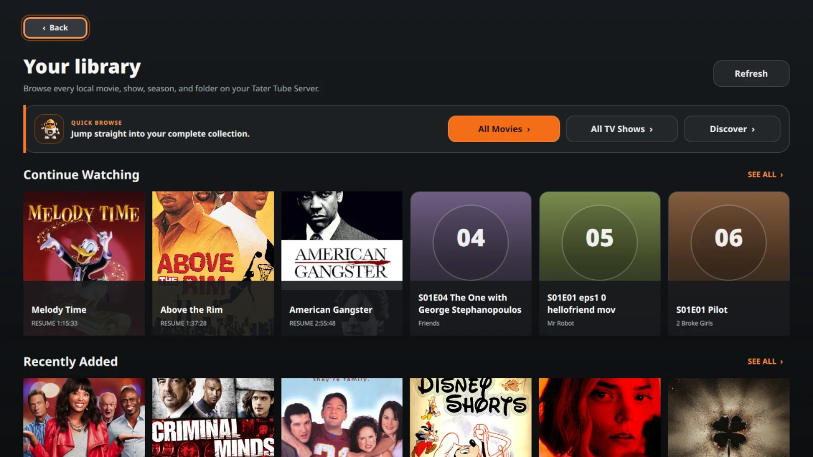
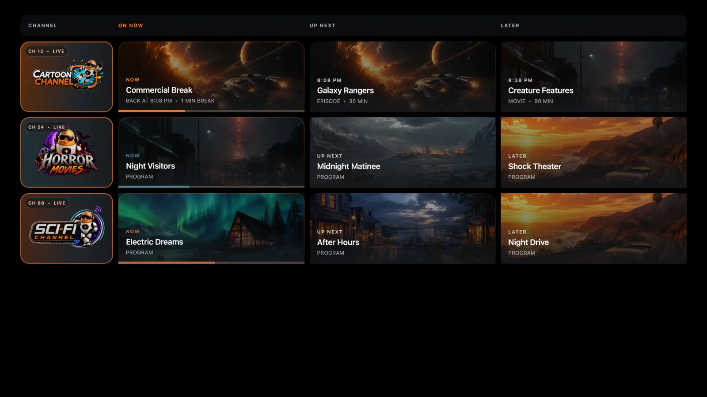

Pick up where you left off
Resume movies and episodes across paired screens with progress stored by your server.
Continue WatchingPlayback history

A modern, self-hosted home for your movies, shows, and live channels—served by Tater Tube Server and made for the biggest screen in the room.

Tater Tube Player keeps the things you watch most within a few controller clicks, with artwork-forward browsing and clean playback controls built for the couch.
Resume movies and episodes across paired screens with progress stored by your server.
Move through movies, TV shows, folders, seasons, and episodes without leaving the player.
Watch server-built Tube TV channels with guide data, bumpers, station IDs, and commercial breaks intact.
Artwork, progress, live schedules, and search stay clear from across the room. Every surface is designed for a controller or TV remote first.


Tater Tube Server scans your movies and shows, resolves artwork, remembers playback, builds your Tube TV schedule, and chooses direct play or transcoding for each screen.
It is a complete self-hosted media platform—not another skin over Plex, Emby, or Jellyfin.
Map local media into Docker and serve it directly from your own hardware.
Turn movies and series into scheduled channels with guides, bumpers, station IDs, and commercial breaks.
Use direct playback when the device supports it and server transcoding when it does not.
Connect players with a short PIN and keep progress synchronized by the server.
The shared server contract keeps libraries, playback, and live channels consistent while each client feels native to its platform.
The Qt player is in active development with controller-first browsing, playback, search, and Live TV.
A native SwiftUI and AVKit client will use the same Tater Tube Server library and playback contract.
A native Compose TV and Media3 client will bring Tater Tube to Android-powered living rooms.
Choose the VCR-style 240-MP interface on Steam/Linux, a Pi 4 CRT, or a Pi 5 HDMI setup. Tater Tube Retro brings together Game Center, PC Link, Public Access, Tape Deck, and the complete retro module lineup.